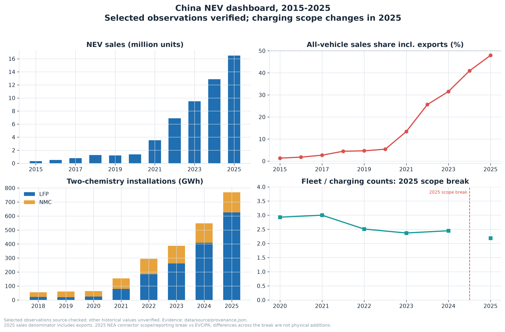

03 / Industry evidence · Jiayu Yan
Measure the market before sizing the opportunity.
What do national statistics establish about China's NEV transition, and can they justify a charging-investment decision?
Data and approach
Seven compiled tables cover 2015–2025. Source dates, denominator reconciliation and bilingual figures make the calculation inspectable. The provenance audit separates externally verified values from coursework compilations, unresolved inputs and assumptions.
What the compilation shows
NEVs account for 47.9% of CAAM all-vehicle sales in 2025, including exports. This is not domestic registration share. LFP accounts for about 81% of the LFP + ternary installed-capacity subtotal, not necessarily all chemistry types.
The 2025 NEA charging snapshot has a different reporting scope from historical EVCIPA counts. Cross-break ratios cannot establish continuous growth or public accessibility.

Decision and boundary
Use the compilation to frame market questions. Before selecting charging sites, collect local demand, utilization, connector power, electricity and site costs. National counts alone do not establish shortages or investment returns.
Historical observations remain partly unverified. The carbon scenario uses an author-selected factor of 1.5 tonnes CO₂ per vehicle-year; it is not measured savings or a life-cycle assessment.